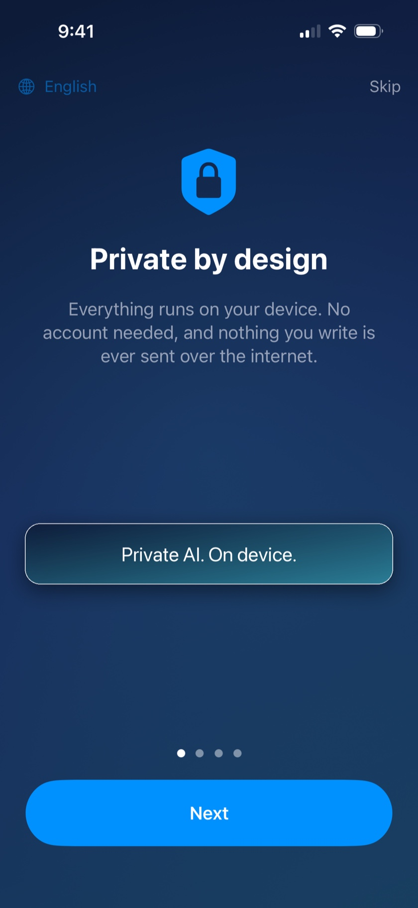

Your AI assistant.
Even without internet.
Tomesi answers your questions right on your iPhone — on a plane, abroad, off the grid. Your conversations never leave your phone.
Download on the App Store
Tomesi answers your questions right on your iPhone — on a plane, abroad, off the grid. Your conversations never leave your phone.
Download on the App Store
The AI is installed on your iPhone. Airplane mode, mountains, open sea: Tomesi answers — no network, no roaming fees.
Nothing is sent to the internet, nothing is stored anywhere but on your device. No account, no data collection — not a promise, the app's very architecture.
Pay once, own it. No monthly fee, no credits, no premium tier.
Tip: an optional "Precision" mode downloads a more powerful model (~3 GB) for answers that need extra depth.
Tap the microphone and speak: your question is sent by itself after a short pause, and the reply is read aloud. Dictation and read-aloud work in every conversation.
Scan a paper document or attach a PDF to a message and ask about it. Find past discussions with the new conversation search.
Precision mode has a new engine: faster, better replies with less heat.
Yes. After the initial setup, Tomesi no longer needs the internet: the AI model runs entirely on your iPhone. Try it yourself in airplane mode.
Nowhere. They stay on your phone. Tomesi has no conversation servers, no user accounts, no ads. See our privacy policy.
ChatGPT lives on servers: it needs a connection, and your exchanges pass through them. Tomesi lives on your iPhone: less encyclopedic than a cloud giant, but always available, fully private, and subscription-free.
Because Tomesi has no server costs: the AI runs on your device. You buy the app once, and that's it.
An iPhone 15 Pro or newer, with 8 GB of RAM and iOS 26 or later, plus about 4 GB of free space for the standard assistant.
Tomesi is localized in 13 languages (English, French, German, Spanish, Italian, Dutch, Polish, Portuguese, Japanese, Korean, Simplified Chinese, Russian…) and the assistant understands and answers in even more.
Yes. MonIA is now called Tomesi, and the website monia.info is now tomesi.com. If you already bought it, there is nothing to buy again: just update, and your conversations stay on your phone.
Write to us: support@tomesi.com — we reply quickly, and your feedback shapes upcoming versions.